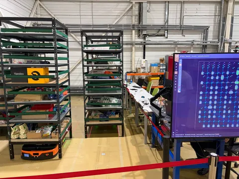
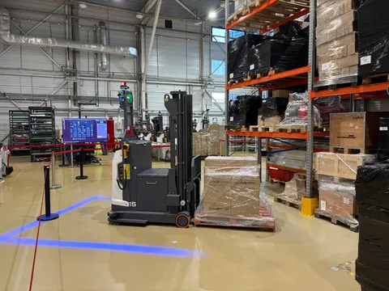
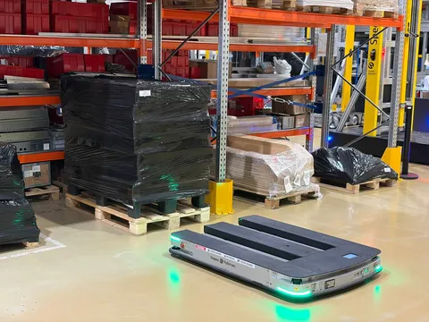
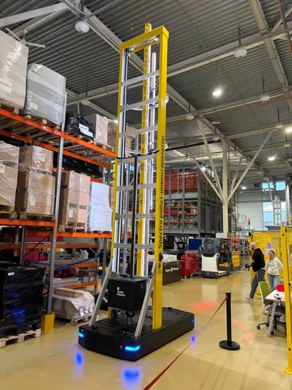
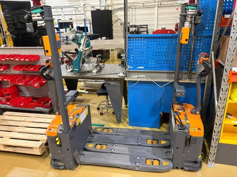
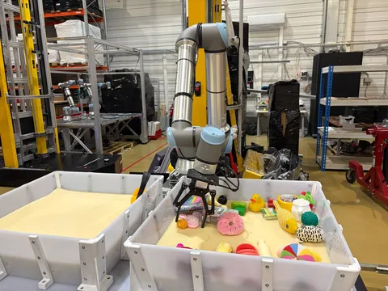

На днях заехал в гости к нашим друзьям из Yandex Robotics в центр робототехники - отдельный офис с полигоном и мастерскими. Очень круто, оставляет впечатление КБ (для зумеров поясню: это не красное-и-белое, а конструкторское бюро) - тут есть дух инженерного творчества.
А пока инженеры созидают, их детища тут же, под той же крышей наматывают километры тренировочных заданий - подвозят стеллажи (как тут), перемещают и поднимают паллеты (как хочется тут), инвентаризируют и сортируют. Сами, почти без присмотра. Это, конечно, завораживает.
Кстати, у ребят будет стенд и пара выступлений на выставке семат в крокусе на следующей неделе. Я тоже там буду 16 числа, если окажетесь рядом - словимся.





